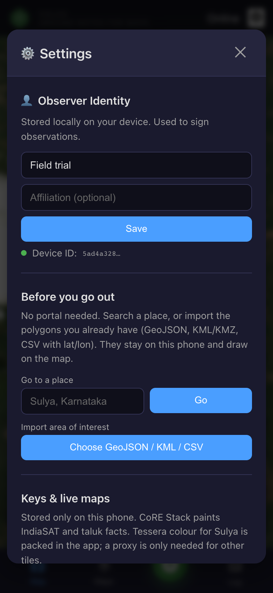
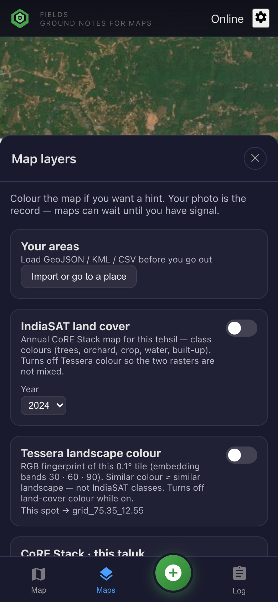
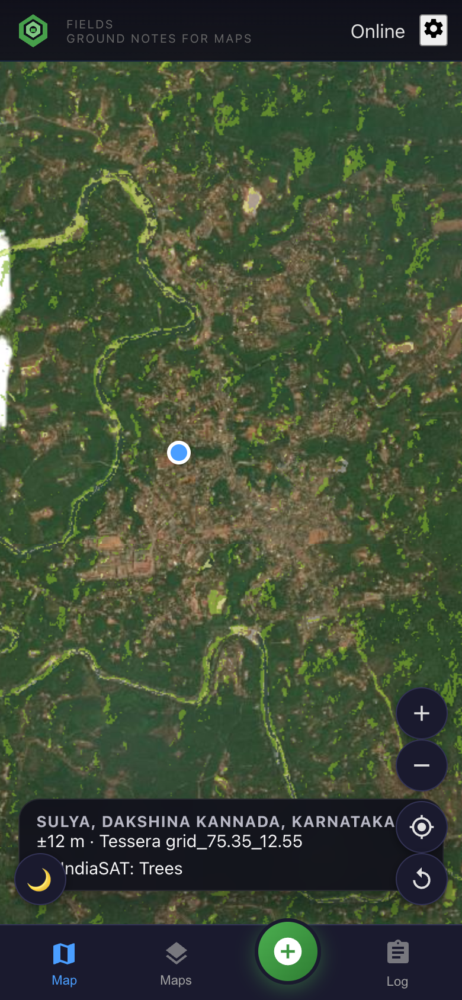
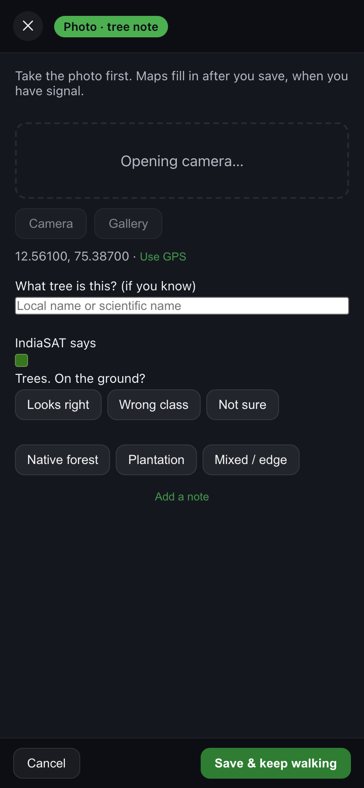

Flow 1 · IndiaSAT / CoRE Stack
The map has an opinion.
You have a photograph.
IndiaSAT is annual 30 m land cover for India, served by CoRE Stack for the taluk under your feet. Colour is a class legend — trees, orchard, crops, water, built-up — not Tessera’s rainbow fingerprint.

Spot bar · Sulya, Dakshina Kannada · IndiaSAT class at this GPS
Arrive. Read the class.
CoRE names the taluk. GetFeatureInfo names the pixel (for example Trees). That is what you agree or disagree with when you save.

Settings · paste a CoRE key, import your plots
Unlock the tehsil map.
One CoRE Stack key paints IndiaSAT WMS for every taluk that has it. Import GeoJSON of the walk. Without a key you can still collect; maps are a courtesy.

Maps · IndiaSAT is a class layer; Tessera is a different product
One colour at a time.
Turn on IndiaSAT land cover. Tessera colour switches off so the two rasters cannot mix. CoRE also lists canopy, water, crops for this taluk — at most two extra rasters.

IndiaSAT 2024 WMS · legend colours on the map (not Tessera RGB)
Walk until the colour is wrong.
Green is trees. Bright green is orchard plantation. Yellow is crops. Red is built-up. Photograph the disagreement.

+ · camera, then looks right / wrong class / not sure
Validate the pixel.
If IndiaSAT already named this spot, say whether it matches the ground. Pick the true class when you disagree. Save. The photo is the record; WMS can wait for signal.

Log · CSV with IndiaSAT class, agreement, tehsil
Leave with a validation set.
Lat, lon, IndiaSAT class, your call, photo. That is how a national layer learns a village.